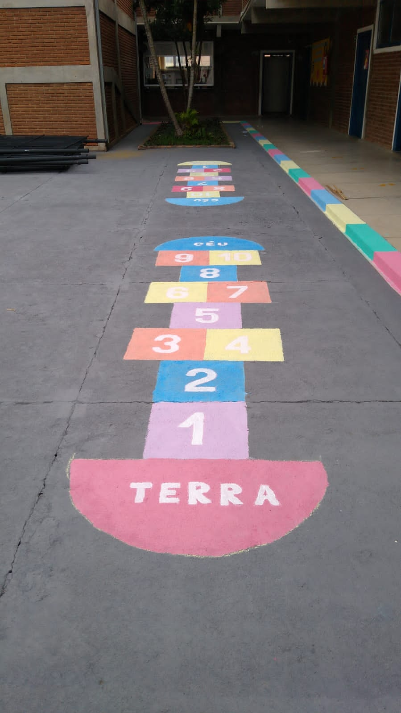
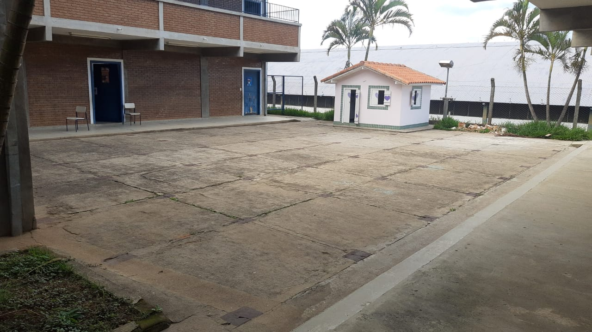
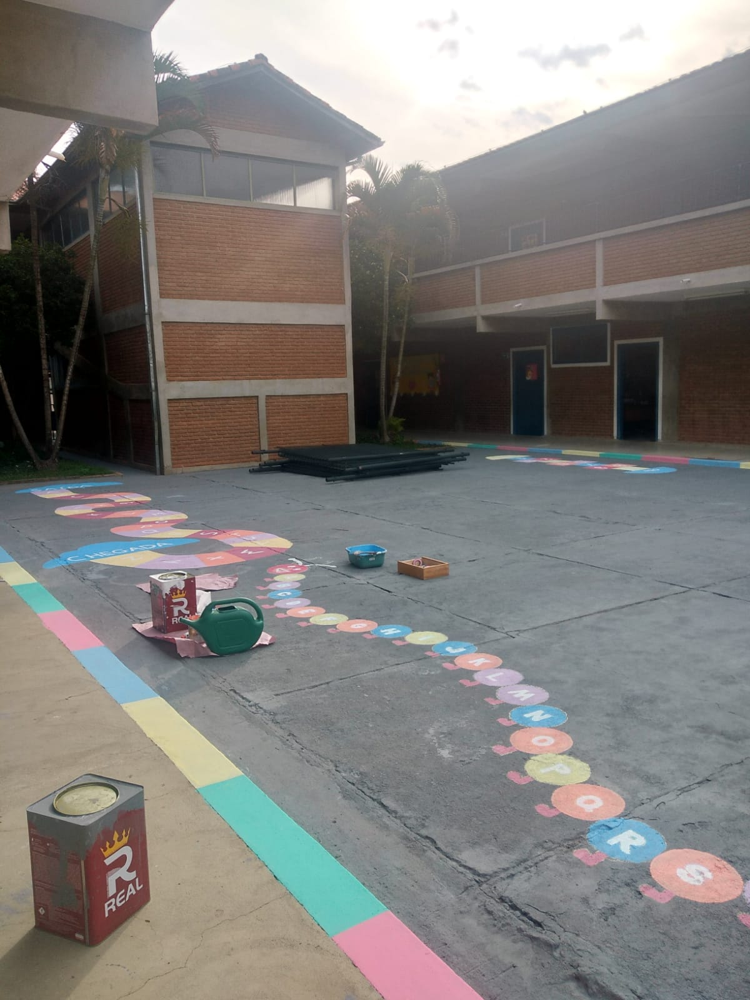

Bota pra fazer - UNIFEI

Descrição
No segundo semestre de 2021 foi realizado através da Universidade Federal de Itajubá, com o apoio da Cacife tintas, o projeto social 'Bota pra fazer' que contou com o apoio de diversos estudantes com o intuito de realizar uma ação solidaria na região de Itajubá.
Como membro da equipe Saci Baja SAE, foi designado o trabalho de revitalização da escola CIEM Professora Geralda Cerávolo Rodrigues, localizada na rua Ângelo Marzulo, N° 29 – Bairro Santo Antônio, município de Itajubá – MG. A escola atende a 215 alunos com faixa etária que vai de 04 a 10 anos./p>
A ação social buscou a revitalização do pátio da escola, que por nunca ter sido pintado era áspero e sem vida. Além disso, por não haver cobertura sobre o ambiente, durante os horários de sol constante o pátio ficava muito quente tornando inviável para o lazer das crianças
 ← Voltar ao Portfolio